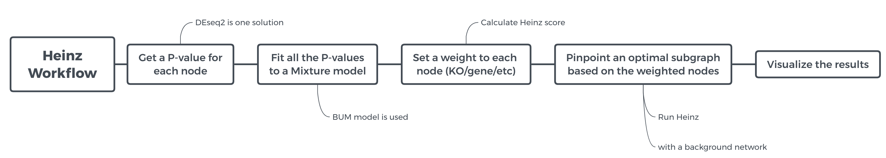
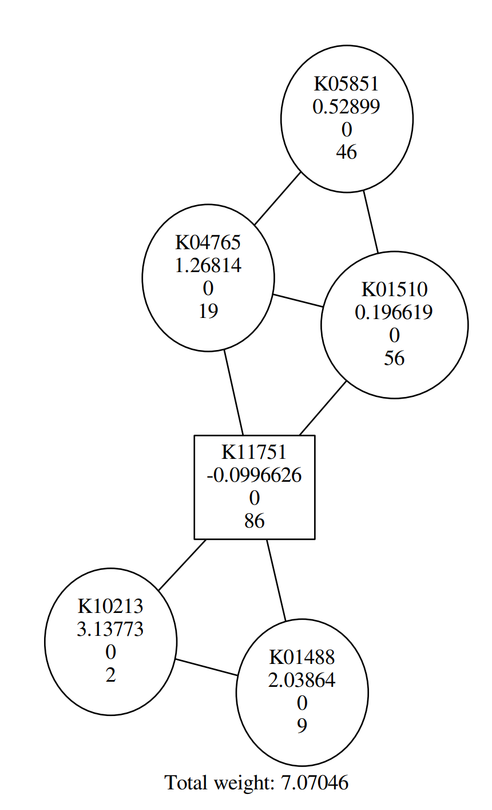
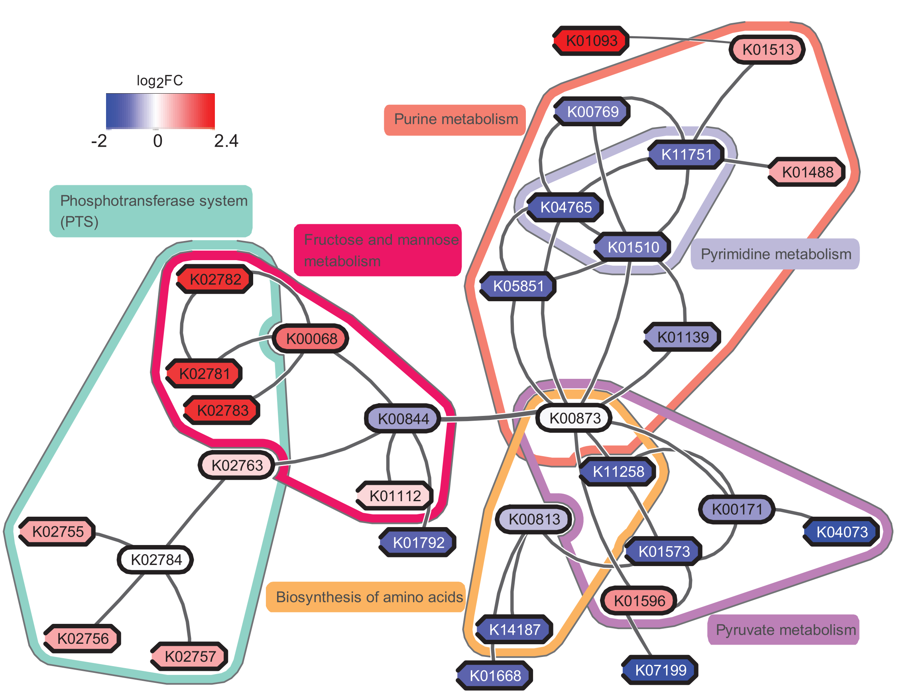
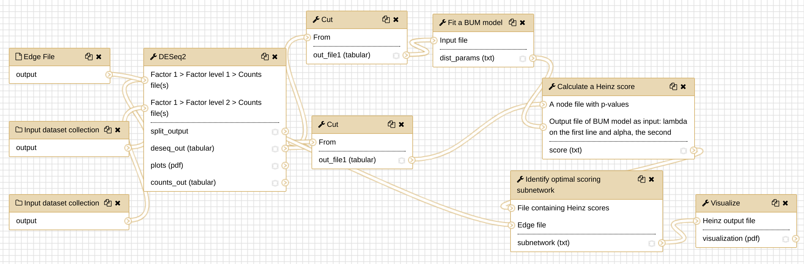

Network analysis with Heinz
 Chao (Cico) Zhang
Chao (Cico) ZhangOverview
question Questionsobjectives Objectives
Which pathways are potentially contributing to dental caries?
requirements Requirements
Network Analysis of metatranscriptomics data using Heinz in Galaxy to pinpoint the optimal scoring subnetwork.
- Introduction to Galaxy Analyses
- Sequence analysis
- Quality Control: slides slides - tutorial hands-on
- Mapping: slides slides - tutorial hands-on
time Time estimation: 1 hour 30 minutes
Supporting Materials
last_modification Last modification: Jan 6, 2021
Overview
The human microbiome plays a key role in health and disease. Thanks to comparative metatranscriptomics, the cellular functions that are deregulated by the microbiome in disease can now be computationally explored. Unlike gene-centric approaches, pathway-based methods provide a systemic view of such functions; however, they typically consider each pathway in isolation and in its entirety. They can therefore overlook the key differences that (i) span multiple pathways, (ii) contain bidirectionally deregulated components, (iii) are confined to a pathway region. To capture these properties, computational methods that reach beyond the scope of predefined pathways are needed.
In this tutorial, we will perform a network analysis using Heinz (GitHub, publication) in Galaxy. The data comes from the study May et al., and we will reproduce some of the computational steps from this study with simplified data and parameters to speed up the analysis for the purposes of this tutorial.
Agenda
In this tutorial, we will cover:
comment Note: results may vary
Your results may be slightly different from the ones presented in this tutorial due to differing versions of tools, reference data, external databases, or because of stochastic processes in the algorithms.
In this tutorial, we will run the Heinz workflow step by step to understand how each step works. To get an overview of what this workflow does and what kind of calculation is involved, view the flowchart below.

Obtaining and preparing data 
The study May et al. includes the computation steps starting from the raw RNAseq datasets. The operations that processed raw data into the interpreted data are beyond the scope of this tutorial. To learn that, please refer to the relevant topics in the Galaxy training material. In this tutorial, we start with the interpreted data, which are KO (KEGG Orthology) count data. All the data needed for this tutorial are available from Zenodo.
details Background: What is KO count?
KOs are organism-independent identifiers that group together proteins of similar biochemical functions. It is a term specific to KEGG database. It is a group concept, similar to the concept “pathway”, which includes a bunch of molecules and their interactions. Take a random line in our dataset, “K01369 7” as an example, the first column represents the KO ID, and the second column — the numeric value is the KO counts. If we understand it by the face value, it is 7 protein molecules that are counted from our dataset as this KO “K01369”; but we usually mingle proteins with genes because we often assume that each protein corresponds to a gene, so it can be understood as 7 genes. Now we are working on the microbial RNAseq data, and the assumption is also used subconsciously.
Understanding our input data
According to the study May et al., dental caries (DC) dataset in this tutorial came from an experiment that comprised of supragingival plaque samples collected from all dental surfaces of 36 individuals who had either a caries-positive (disease) or a caries-negative (health) oral profile. Each of the 36 samples was sequenced, pre-processed and transformed into KO counts. We will use these count data as the starting point to perform the network analysis.
comment Dataset details
The count data of the 36 samples are separated into 36 files, organized into two groups: ‘CP’ (caries-positive) and ‘CN’ (caries-negative).
Importing the data into Galaxy
After knowing what our input data are like, let’s get them into Galaxy history:
hands_on Hands-on: Obtaining our data
Make sure we have an empty Galaxy history. Give it a sensible name.
tip Tip: Creating a new history
Click the new-history icon at the top of the history panel
If the new-history is missing:
- Click on the galaxy-gear icon (History options) on the top of the history panel
- Select the option Create New from the menu
tip Tip: Renaming a history
- Click on Unnamed history (or the current name of the history) (Click to rename history) at the top of your history panel
- Type the new name
- Press Enter
- Upload Disease Dataset
- Open the file upload menu
- Click on Collection tab
- Click on the Paste/Fetch data button
- Copy the Zenodo links for the Disease Datasets
details View list of Zenodo URLs for Dental Caries Dataset (Disease, CP)
https://zenodo.org/record/1344105/files/2241_CP_DZ_PairTo_2242.txt https://zenodo.org/record/1344105/files/2126_CP_MZ_PairTo_2125.txt https://zenodo.org/record/1344105/files/2991_CP_DZ_PairTo_2992.txt https://zenodo.org/record/1344105/files/2931_CP_DZ_PairTo_2930.txt https://zenodo.org/record/1344105/files/2284_CP_DZ_PairTo_2283.txt https://zenodo.org/record/1344105/files/2125_CP_MZ_PairTo_2126.txt https://zenodo.org/record/1344105/files/4131_CP_DZ_PairTo_4132.txt https://zenodo.org/record/1344105/files/2954_CP_DZ_PairTo_2955.txt https://zenodo.org/record/1344105/files/2170_CP_MZ_PairTo_2169.txt https://zenodo.org/record/1344105/files/2955_CP_DZ_PairTo_2954.txt https://zenodo.org/record/1344105/files/2011_CP_DZ_PairTo_2012.txt https://zenodo.org/record/1344105/files/2012_CP_DZ_PairTo_2011.txt https://zenodo.org/record/1344105/files/2269_CP_DZ_PairTo_2270.txt https://zenodo.org/record/1344105/files/3215_CP_MZ_PairTo_3214.txt https://zenodo.org/record/1344105/files/2354_CP_DZ_PairTo_2355.txt https://zenodo.org/record/1344105/files/3306_CP_DZ_PairTo_3307.txt https://zenodo.org/record/1344105/files/2061_CP_DZ_PairTo_2062.txt https://zenodo.org/record/1344105/files/2355_CP_DZ_PairTo_2354.txt https://zenodo.org/record/1344105/files/2242_CP_DZ_PairTo_2241.txt- Click on Start to Upload the files
- Click Build once upload has completed
- Enter Name:
CP- Click Create list to make the collection
- Upload control (healthy) datasets
- Repeat the previous steps with the samples from healthy individuals:
details View list of Zenodo URLs for Dental Caries Dataset (Healthy, CN)
https://zenodo.org/record/1344105/files/2310_CN_DZ_PairTo_2309.txt https://zenodo.org/record/1344105/files/2062_CN_DZ_PairTo_2061.txt https://zenodo.org/record/1344105/files/2191_CN_MZ_PairTo_2192.txt https://zenodo.org/record/1344105/files/2052_CN_MZ_PairTo_2051.txt https://zenodo.org/record/1344105/files/2051_CN_MZ_PairTo_2052.txt https://zenodo.org/record/1344105/files/2192_CN_MZ_PairTo_2191.txt https://zenodo.org/record/1344105/files/2234_CN_DZ_PairTo_2233.txt https://zenodo.org/record/1344105/files/2233_CN_DZ_PairTo_2234.txt https://zenodo.org/record/1344105/files/2270_CN_DZ_PairTo_2269.txt https://zenodo.org/record/1344105/files/2225_CN_MZ_PairTo_2226.txt https://zenodo.org/record/1344105/files/4132_CN_DZ_PairTo_4131.txt https://zenodo.org/record/1344105/files/2309_CN_DZ_PairTo_2310.txt https://zenodo.org/record/1344105/files/2992_CN_DZ_PairTo_2991.txt https://zenodo.org/record/1344105/files/3214_CN_MZ_PairTo_3215.txt https://zenodo.org/record/1344105/files/2169_CN_MZ_PairTo_2170.txt https://zenodo.org/record/1344105/files/2930_CN_DZ_PairTo_2931.txt https://zenodo.org/record/1344105/files/3307_CN_DZ_PairTo_3306.txt- Name this collection:
CNquestion Question
- How many samples do you have in our disease collection (CP)? How many healthy samples (CN)?
- How many columns in each file? What are these columns?
solution Solution
- You should have 19 samples in the disease collection (CP), and 17 in the negative collection (CN).
- There are two columns, one is the KO IDs, the other is the count.
tip Tip: Creating a collection from files already in your history
Dataset collections enables us to easily run tools on multiple datasets at once, you probably have done that in the file upload menu using the
Collectiontab. If not, you can still create dataset collections manually.hands_on Manually organizing our data into a collection
If you have all the datasets in the history, but they are not organized into a collection yet, you can follow these steps to create a collection:
Click on the checkmark icon at top of your history.
Select all the files whose name contains
CP, then click on for all selected.. and select Build Dataset List from the dropdown menu.In the next dialog window, you need to give a name, here we just set it to
CP, then click Create list.Hidden these selected files by clicking on for all selected.. and selecting Hidden datasets. Note: This step is optional, we do it here to keep Galaxy history clean.
Redo the Step 2, 3, 4 for CN, set the name of the data list as ‘CN’.

Differential Expression Analysis (DEA) by DESeq2
What is differential expression analysis?
comment A defintion
The definition of differential expression analysis given by EBI means taking the normalised read count data and performing statistical analysis to discover quantitative changes in expression levels between experimental groups. For example, we use statistical testing to decide whether, for a given gene, an observed difference in read counts is significant, that is, whether it is greater than what would be expected just due to natural random variation.
In principle, DEA is a causal analysis; but in reality, it is hampered by the complexity of the experimental situation and measurement. Back to our datasets, CP and CN, they are from two experimental groups. By DEA, we hope to pinpoint the candidate genes relevant to dental caries first, then we will use Heinz to infer the related pathways.
Which tools are available for DEA?
There are a few canned tools commonly used for DEA, like Limma and DESeq2. If you are interested, you may look up the pros and cons of each tool. Here we use DESeq2.
Perform Differential Expression Analysis (DEA)
After learning about differential expression analysis, let’s get some hands-on experience.
hands_on Hands-on: DEA via DESeq2
- DESeq2 tool with the following parameters
- “Specify a factor name”:
dental_caries(under1: Factor)- “Specify a factor level”: to
CP(under1: Factor level)
- param-files “Counts file(s)”:
CP(collection)- “Specify a factor level”:
CN(under2: Factor level)
- param-files “Counts file(s)”:
CN(collection)- “Files have header”:
No- “Visualising the analysis results”:
No- Leave all other parameters to the default settings
It takes a few minutes to finish DESseq2. After the analysis is finished, have a look at the file, it should look like something this:
GeneID Base mean log2(FC) StdErr Wald-Stats P-value P-adj
K15661 55.0733128361562 2.49892393773464 0.508475451930939 4.91454194739384 8.89902710599613e-07 0.00491938218419466
K15666 48.4532561772761 2.22805029428311 0.493391718412049 4.51578372951607 6.30830206230236e-06 0.00820667379798327
K10213 25.1966742274619 -2.45624670858868 0.550895251183889 -4.45864563782342 8.24791475064012e-06 0.00820667379798327
K03732 563.63634258472 -1.41961721984814 0.316992240900184 -4.47839737596338 7.52055094378821e-06 0.00820667379798327
K01792 112.923146882195 -1.26925892659617 0.285732234964578 -4.44212717810268 8.90738834802815e-06 0.00820667379798327
Fit a BUM model (a mixture model)
From a statistical point of view, p-values are uniformly distributed under null hypothesis; in other words, under alternative hypothesis, the noise component (which holds under null hypothesis) will be adequately modeled by a uniform distribution. With this knowledge, we can fit these p-values to a mixture model (BUM model), as the figure below shows.
comment Why do we need a mixture model?
To avoid making this tutorial sound like a math class, let’s focus on the philosophy of using a statistical model. In the graph above, we have visualized the p-values; those bins have some shapes; by viewing the figure, it is possible for us to cherrypick the data points (KO) with mesh eyes, but it must be tedious and boring, nobody wants to spend a few days on doing this. In this situation, computers come into play; however, unlike humans, computers cannot understand the graph but mathematical formulas, that’s why we need to fix the data into a statistical model (denoted by the red curve and blue line in the graph), which computers can understand easily.
Before fitting to BUM model in Galaxy, we need to prepare the input data for the tool Fit a BUM model, that’s a file that only contains p-values.
hands_on Hands-on: extract p-values from DESeq2 output
- cut columns from a table tool with the following parameters:
- “Cut columns”:
c6- “Delimited by”: to
TAB- “From”: to the output of DESeq2
Now we can Fit a BUM model:
hands_on Hands-on: fit the BUM model
- Fit a BUM model tool with the following parameters
- “Input file”: the output of cut
Pinpoint the key pathways with Heinz
After getting the parameters of the BUM model from the last step, we will use Heinz to pinpoint the optimal subnetwork. Then we could look for the key pathways relevant to the subnetwork. Before we continue, let’s figure out what Heinz is actually doing.
Heinz is an algorithm for searching an optimal subnetwork from a bigger network. You may wonder what the network is here. Through the previous steps, we have got a list of identities, that is a list of gene IDs with p-values, which form the nodes of ‘the bigger network’, the relations between the nodes, that is the edges, needs to be obtained from a background network, which represents a pathway relation databases, such as Reactome and STRING. In this tutorial, we only use a small sample background network for demonstration purposes. The background network is represented as edges in a TXT file where each line denotes an edge as follows:
ACTR1B ACVR2B
ZSWIM9 FOXP3
LGALS4 PRKX
NPTX1 CIAO1
Upload this edge file (hereafter we call it edge file) into the Galaxy instance.
hands_on Upload edge file
- Upload the edge file from Zenodo
- Open the upload menu
- Choose Paste/Fetch data option
- Paste the URL into the box:
https://zenodo.org/record/1344105/files/edge.txt- Click Start
Calculate Heinz scores
As the first step, we need to calculate a Heinz score for each node, using the BUM model parameters we obtained; meanwhile, we also need to specify an FDR value as input.
comment What is an FDR value?
FDR is short for false discovery rate, which is a method of conceptualizing the rate of type I errors in null hypothesis testing when conducting multiple comparisons, if you are interested, view the detail in Wikipedia.
For different datasets and problems, we probably need to pick up an FDR value separately. Here we set FDR to 0.11.
Similar to Fit a BUM model, we also need to prepare the input data for the tool Calculate a Heinz score.
question Question
What is the requirement of the input data format for Calculate a Heinz score?
solution Solution
In the user interface of the tool “Calculate a Heinz score”, we see that “A node file with p-values” is needed. It should contain two columns delimited by tab, one is KO ID; the other, p-value.
hands_on Hands-on: extract geneID and p-values from DESeq2 output
- cut columns from a table tool with the following parameters
- “Cut columns”:
c1,c6- “Delimited by”:
TAB- “From”: the output of DESeq2
hands_on Hands-on: calculate Heinz scores
- Calculate a Heinz score tool with the following parameters
- “A node file with p-values”: the output of the previous cut step
- “FDR value”: to 0.11
- “Choose your input type for BUM parameters”:
The output file of BUM model- “Output file of BUM model as input: lambda on the first line and alpha, the second”: the output of Fit a BUM model
comment What is the Heinz score?
To figure out this score without reading the formula, we can understand Heinz score in this way. FDR is involved in calculating a p-value threshold and any KO whose p-value is below this threshold is regarded as significant, which means the Heinz score is positive (another calculation in the formula). If we pick a higher FDR value, then we will have a higher p-value threshold, and more KOs are probably regarded as significant. In this situation, we probably have many false positive (those regarded as significant are actually not) on the one hand; on the other hand, Heinz will deliver a bigger subnetwork, which might be exhausting to analyze. Therefore, we need to pick up an FDR value properly.
Run Heinz: pinpoint the optimal subnetwork
After getting Heinz scores, let’s run Heinz program to find the optimal subnetwork from the background network which we mentioned earlier.
hands_on Hands-on: pinpoint the optimal subnetwork
- Identify optimal scoring subnetwork tool with the following parameters
- “File containing Heinz scores”: the output of Calculate a Heinz score
- “Edge file”: the edge file uploaded
It usually takes a few minutes to get the result, but mind you, for some tasks, it might take a few hours to get a result in practice.
comment The running time of the program
- Graph problem is way more complicated than we thought.
- It might take a much longer time for some complicated datasets.
- We can use multiple CPUs to accelerate the computation (for now, this function is not available in Galaxy yet), but, to use that, you can install Heinz directly via Bioconda in a Linux environment.
Visualize the output: visualize the optimal subnetwork
The result we got from the last step is not very human-readable, is it? It is a little painful to understand the Heinz result directly. Therefore we need to visualize the output by making it into graphs.
hands_on Hands-on: visualize the optimal subnetwork
- Visualize the optimal scoring subnetwork tool with the following parameters
- “Heinz output file”: the output of Identify optimal scoring subnetwork
In this tutorial, you probably get a similar graph to the following:

question Question
According to the figure above, Why are some shapes are round, others square?
solution Solution
Round shape corresponds to positive Heinz score; square shape corresponds to negative Heinz score.
In addition to the tool we will use in Galaxy, you may consider using eXamine plugin in Cytoscape for a richer visualization, if we use the original data from the study May et al., perform all of these steps and visualize the result by eXamine, we can get a visualization as follows:

If you are interested, you may try to make sense of the result yourself. To answer the question “which pathways are potentially contributing to dental caries?”, we need to find the key pathways relevant to the subnetwork. To achieve that, we probably need to combine information from other bioinformatics services and literature.
Save the history into a workflow
Let’s assume that these are the operations we always need for different datasets, to make life easier, we can save all of these operations into a workflow in Galaxy, which you can reuse for different datasets next time.
hands_on Hands-on: Extract the Heinz workflow
Extract the workflow from your history
tip Tip: Extracting a workflow from history
- Remove any failed or unwanted jobs from your history.
- Click on History options (gear icon galaxy-gear) at the top of your history panel.
- Select Extract workflow
- Check the steps, enter a name for your workflow, and press the Create Workflow button.
Run the workflow on the dataset in this tutorial

As a self practice, you ran the newly created workflow with the dataset in this tutorial. Do you feel the convenience of running a workflow directly?
Congrats! You have finished all the tools in Heinz workflow! You have successfully run each tool and understood how it works. In real research, running these tools are only part of the effort, we still need to invest a huge amount of intelligence in making sense of the results and converting them to knowledge, which is fraught with uncertainties and confounders, where perhaps luck will come into play. So good luck!
keypoints Key points
Using Heinz do the network analysis based on the metatranscriptomics or transcriptomics data.
Extracting the signals hidden in the p-value distribution of the differential expression analysis.
Visualizing the pinpointed subnetwork helps us understand the result better
Heinz helps narrow down the scope to find the key pathways
Multiple CPUs will accelerate the computation especially for the complex datasets
Useful literature
Further information, including links to documentation and original publications, regarding the tools, analysis techniques and the interpretation of results described in this tutorial can be found here.
Feedback
Did you use this material as an instructor? Feel free to give us feedback on how it went.

Citing this Tutorial
- Chao (Cico) Zhang, 2021 Network analysis with Heinz (Galaxy Training Materials). /training-material/topics/transcriptomics/tutorials/network-analysis-with-heinz/tutorial.html Online; accessed TODAY
- Batut et al., 2018 Community-Driven Data Analysis Training for Biology Cell Systems 10.1016/j.cels.2018.05.012
details BibTeX
@misc{transcriptomics-network-analysis-with-heinz, author = "Chao (Cico) Zhang", title = "Network analysis with Heinz (Galaxy Training Materials)", year = "2021", month = "01", day = "06" url = "\url{/training-material/topics/transcriptomics/tutorials/network-analysis-with-heinz/tutorial.html}", note = "[Online; accessed TODAY]" } @article{Batut_2018, doi = {10.1016/j.cels.2018.05.012}, url = {https://doi.org/10.1016%2Fj.cels.2018.05.012}, year = 2018, month = {jun}, publisher = {Elsevier {BV}}, volume = {6}, number = {6}, pages = {752--758.e1}, author = {B{\'{e}}r{\'{e}}nice Batut and Saskia Hiltemann and Andrea Bagnacani and Dannon Baker and Vivek Bhardwaj and Clemens Blank and Anthony Bretaudeau and Loraine Brillet-Gu{\'{e}}guen and Martin {\v{C}}ech and John Chilton and Dave Clements and Olivia Doppelt-Azeroual and Anika Erxleben and Mallory Ann Freeberg and Simon Gladman and Youri Hoogstrate and Hans-Rudolf Hotz and Torsten Houwaart and Pratik Jagtap and Delphine Larivi{\`{e}}re and Gildas Le Corguill{\'{e}} and Thomas Manke and Fabien Mareuil and Fidel Ram{\'{\i}}rez and Devon Ryan and Florian Christoph Sigloch and Nicola Soranzo and Joachim Wolff and Pavankumar Videm and Markus Wolfien and Aisanjiang Wubuli and Dilmurat Yusuf and James Taylor and Rolf Backofen and Anton Nekrutenko and Björn Grüning}, title = {Community-Driven Data Analysis Training for Biology}, journal = {Cell Systems} }